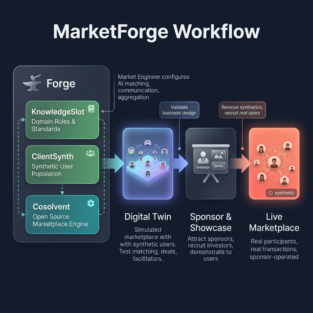

An open research and engineering project exploring how AI can help buyers and sellers find each other in markets where they currently can't.
Nobel laureate Alvin Roth identified thin markets as a fundamental economic problem: markets where transactions are infrequent, matching is difficult, and beneficial exchanges fail to occur despite willing participants on both sides.
The DeeperPoint framework identifies two categories of forces that prevent markets from working: existential threats (risk, trust, regulation) that can prevent a market from forming at all, and resistance challenges (opacity, offering complexity, distance, cognitive overload) that reduce efficiency.
For centuries, overcoming these forces required a painful tradeoff: standardize to create thickness (destroying useful information) or preserve uniqueness to maintain relevance (fragmenting markets). AI dissolves this tradeoff.
Learn more about thin markets →DeeperPoint is a self-funded, one-person research project — not a startup. It's building open-source tools to test whether AI-driven market engineering can make thin markets thicker and more functional.

The MarketForge workflow — from component assembly to live marketplace
Marketplace scaffolding framework. Matching, deal assembly, permissions.
Synthetic user populations for testing marketplace dynamics before launch.
AI-curated domain knowledge for marketplace operation.
Combines all three into deployable, sponsor-ready platforms.
Explore detailed analyses of 20 real-world thin markets, diagnose your own market's challenges, or read the foundational research.
Detailed analyses of real-world thin markets — from cross-border grain trade to rare disease therapeutics — with MarketForge implementation prospects.
An interactive version of the Market Engineer's Diagnostic Checklist. Walk through your specific market's challenges and get a structured assessment.
The full treatment of market physics, engineering interventions, AI capabilities, and the strategic implications for global trade.